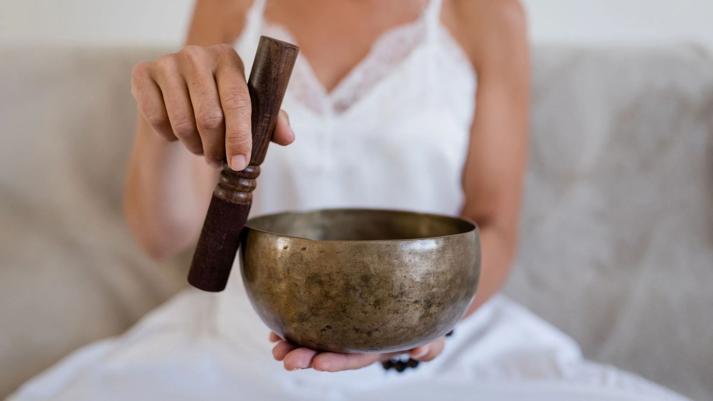
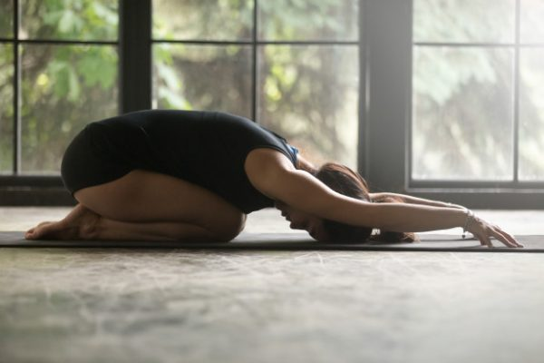

|  |
SINGING BOWL:
lessen chronic pain, improves sleep, reduce anger, gains focus, improves respiratory rate. |
- Lie down on your back
- Bring your hands over your lower abdomen
- Breathe into your belly and constantly exhale and inhale
- Take belly up towards the ceiling, press the hips up and breathe.
|
|  |
Tao Yin:
calm the body, help in the release of tension, enhanced immune function and improves balance and coordination. |
- Feet straight and about hip width apart.
- Hold the clubs at your sides with your palms facing in and the top of the club pointing down. Keep a loose grip.
- Perform a slight hip hinge to bring the clubs up, and as they come up, you want to point them forward then bring your elbows in and rotate your wrists outward to circle the club around.
|
 |
Pranayama:
Promotes relaxation and mindfulness, Improves lung function, Enhances cognitive performance and reduces cigarette cravings. |
-
Take a steady breath in through both nostrils
- Inhale until you reach your lung capacity; maintain a tall spine.
-
Hold your breath for a second, then constrict some of the breath at the back of your throat and exhale slowly through both nostrils.
|